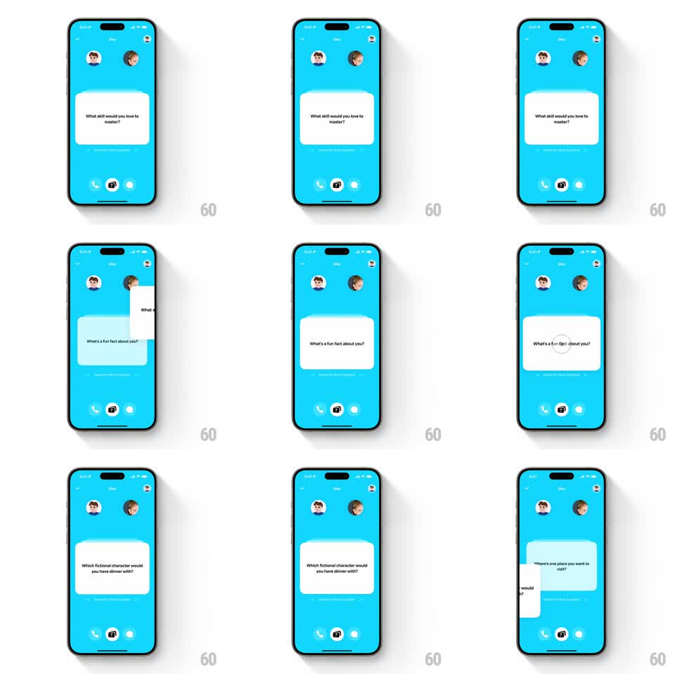

Media
Frame-by-frame

Rebuild this interaction 1:1: Honk's icebreaker card swipe - hold the question card and fling it off-screen to cycle to the next icebreaker, with the card tracking the finger, rotating in flight, and the next question sliding in with a spring.

Rebuild this interaction 1:1: Honk's icebreaker card swipe - hold the question card and fling it off-screen to cycle to the next icebreaker, with the card tracking the finger, rotating in flight, and the next question sliding in with a spring.
## Integration
Integration: stack-agnostic spec - springs given as stiffness/damping, timed motions as duration + curve; map every value to your framework and animation library of choice.
## Scene
Blue in-call screen: two avatars top-center, call controls bottom, and a centered white question card ("What skill would you love to master?"). Swiping cycles through cards: "What's a fun fact about you?", "Which fictional character would you have dinner with?", "Where's one place you want to visit?".
## Motion spec
Pattern: draggable fling-away card with springy next-card entrance.
- Hold: the card lifts (scale 1 -> 1.03, shadow deepens, 150ms) to signal grab.
- Drag: the card tracks the finger 1:1, rotating proportional to horizontal offset (rotate = dx * 0.08deg, max +-15deg); the next card peeks from behind (scale 0.92 -> 1 as drag progresses).
- Fling: on release with velocity, the card flies off in the throw direction (physics: initial velocity from the flick, slight continued rotation, 350ms to exit); without velocity it springs back to center (spring ~300/20, 300ms).
- Next card: slides/scales in from behind-center (scale 0.92 -> 1, translateY 10pt -> 0, spring ~320/22) as the old one exits; its question text fades in during the last 150ms.
- Works in both swipe directions; cards cycle through the deck.
## Calibration
- Rotation origin is the card's bottom-center - it pivots like it's pinned at the base.
- Only one card is interactive at a time; the deck behind is visual only.
## Reduced motion
Cards crossfade on tap (250ms); no drag physics.
## Don't miss
- The question is the only card content - big centered serif text, no chrome.
- Avatars and call controls are untouched by the swipe.